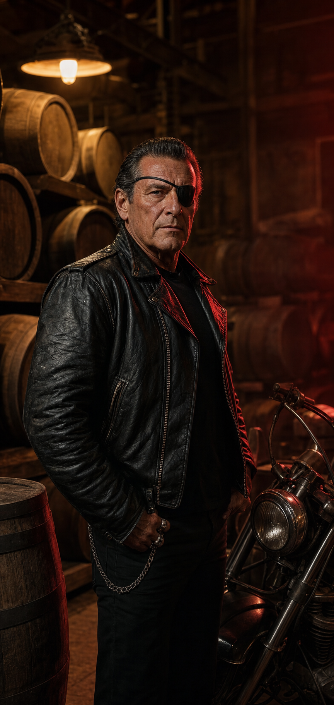

Cool storage, old casks, low light, and enough warehouse musk to remind every bottle where it slept.
Snake Keeps
Eye patch, leather jacket, steady hands. Snake is the private distiller behind Bragg Creek Rum, and he treats every batch like a road story that needs time before it is told.

The man in the barrel room
He does not sell a persona. He protects a process.
Snake came up in the grease era: road motors, hard weather, black leather, and the kind of patience that makes a person listen before speaking. The eye patch became part of the legend, but the real signature is quieter: he knows when a rum needs more time.
Ask him for the recipe and he will tell you it is secret. Ask someone who knows rum and they will recognize the bones: a dark molasses heart, careful fermentation, copper heat, oak char, and the discipline to leave a good thing alone until it gets better.
What Snake keeps close
Vintage bikes are not props here. They are part of the pace: mechanical, stubborn, tuned by ear.
Private appointments are handled like a conversation. No rush, no crowd, no shelf talk.